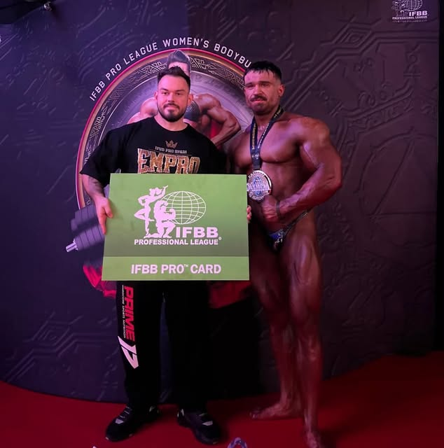
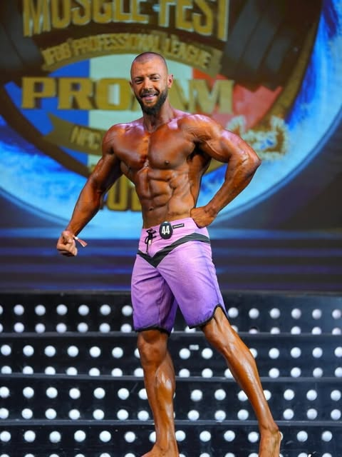
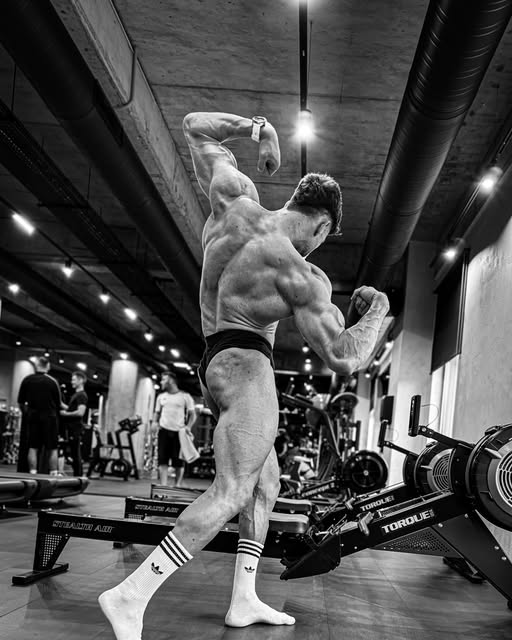
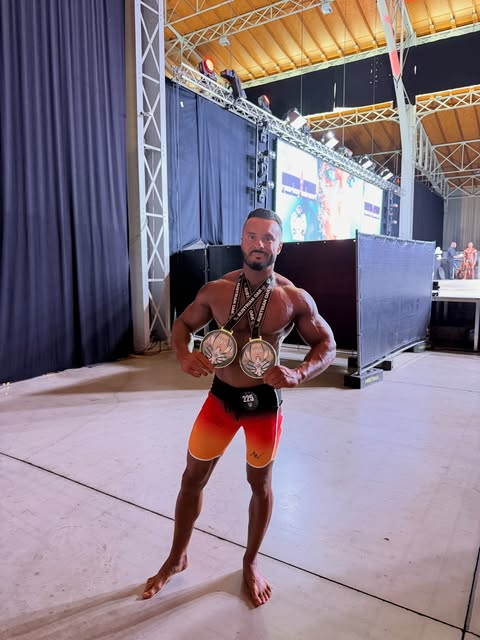
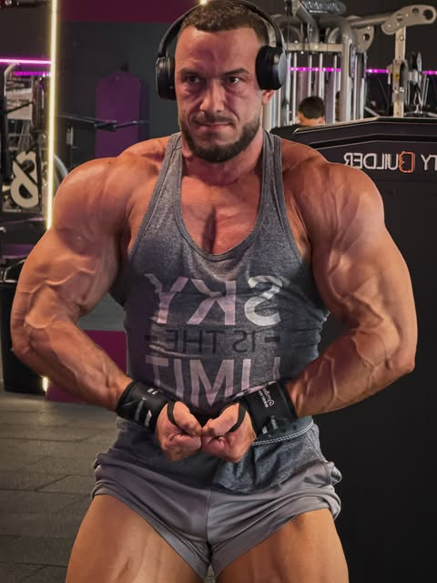
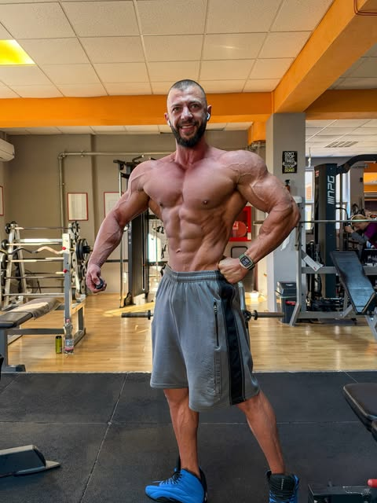
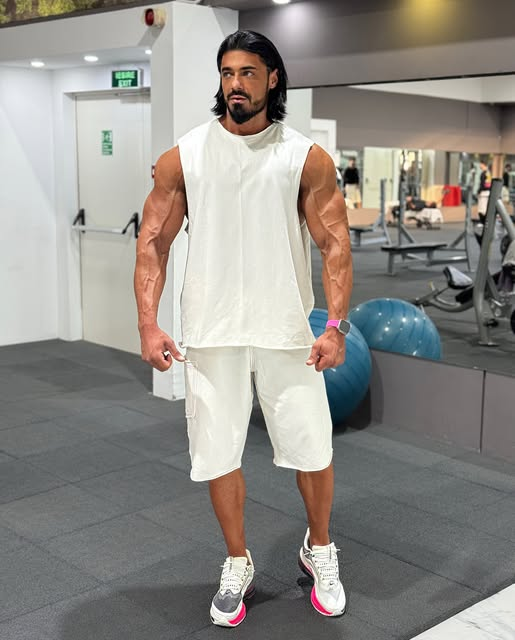
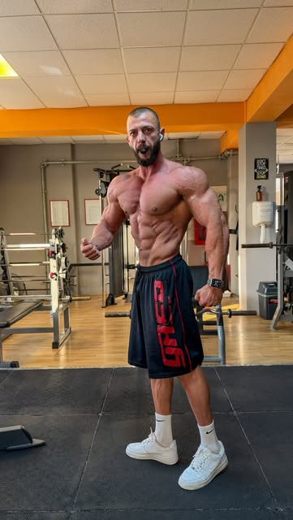

<title>Chera Protocol</title>
<meta name="viewport" content="width=device-width, initial-scale=1, viewport-fit=cover">
<meta name="claude:viewport-fit-sides" content="cover">
<link rel="stylesheet" href="https://fonts.googleapis.com/css2?family=Barlow+Condensed:wght@600;700;800&family=Barlow:wght@400;500;600&display=swap">
<style>
/* Layout: full-width bands (black / white / red) with a 1100px inner column; hero + proof bar + three doors + process + results + testimonials + FAQ. Dark-first, light counterpart. */
:root{
  --bg:#0e0d0d; --bg-2:#181616; --fg:#f5f1ec; --fg-2:#b5aea6; --line:#2d2a28;
  --red:#e1251b; --red-fg:#ffffff; --paper:#ffffff; --paper-fg:#141212; --paper-2:#f4f1ee; --paper-line:#e2ddd7;
  --display:"Barlow Condensed","Arial Narrow",Impact,sans-serif; --body:"Barlow","Segoe UI",Helvetica,Arial,sans-serif;
  color-scheme:dark;
}
@media (prefers-color-scheme: light){ :root:not([data-theme="dark"]){ --bg:#141212; --bg-2:#1d1a1a; --fg:#f5f1ec; --fg-2:#b5aea6; --line:#2d2a28; color-scheme:dark; } }
:root[data-theme="light"]{ --bg:#141212; --bg-2:#1d1a1a; --fg:#f5f1ec; --fg-2:#b5aea6; --line:#2d2a28; color-scheme:dark; }
*{box-sizing:border-box}
[hidden]{display:none!important}
html{scroll-behavior:smooth}
body{margin:0;background:var(--bg);color:var(--fg);font-family:var(--body);font-size:17px;line-height:1.55}
.band{padding-block:72px}
.in{max-width:1100px;margin:0 auto;padding-left:max(16px,env(safe-area-inset-left,0px));padding-right:max(16px,env(safe-area-inset-right,0px))}
.band.paper{background:var(--paper);color:var(--paper-fg)}
.band.paper .muted{color:#5f5853}
.band.red{background:var(--red);color:var(--red-fg)}
.muted{color:var(--fg-2)}
h1,h2,h3{font-family:var(--display);line-height:1.02;margin:0;text-wrap:balance;text-transform:uppercase}
h1{font-size:clamp(44px,8.5vw,92px);font-weight:800;letter-spacing:.005em}
h2{font-size:clamp(34px,5.5vw,56px);font-weight:700}
h3{font-size:26px;font-weight:700}
p{margin:0}
.eyebrow{font-family:var(--display);font-size:14px;letter-spacing:.18em;text-transform:uppercase;color:var(--red);font-weight:700}
.band.red .eyebrow{color:#fff}
.lead{font-size:clamp(18px,2.2vw,22px);max-width:62ch}
.stack{display:grid;gap:20px}
.btn{appearance:none;border:0;border-radius:4px;padding:16px 26px;font:600 16px var(--body);text-transform:uppercase;letter-spacing:.08em;cursor:pointer;text-decoration:none;display:inline-flex;align-items:center;justify-content:center;gap:10px;background:var(--red);color:var(--red-fg)}
.btn.ghost{background:transparent;color:inherit;border:1.5px solid currentColor}
.btn:focus-visible,a:focus-visible{outline:2px solid var(--red);outline-offset:3px}
.row{display:flex;gap:14px;flex-wrap:wrap;align-items:center}

nav{position:sticky;top:env(safe-area-inset-top,0px);z-index:20;background:var(--bg);border-bottom:1px solid var(--line)}
body::before{content:"";position:fixed;inset:0 0 auto;height:env(safe-area-inset-top,0px);z-index:30;background:var(--bg)}
nav .in{display:flex;align-items:center;justify-content:space-between;gap:16px;padding-block:14px}
.brand{font-family:var(--display);font-weight:800;font-size:22px;letter-spacing:.08em;text-transform:uppercase;text-decoration:none;color:var(--fg)}
.brand b{color:var(--red)}
nav ul{list-style:none;margin:0;padding:0;display:flex;gap:22px;font-size:15px;font-weight:500}
nav ul a{color:var(--fg-2);text-decoration:none}
@media (max-width:760px){nav ul{display:none}}

.hero{padding-block:84px 56px;position:relative;overflow:hidden}
.hero .in{display:grid;grid-template-columns:1.2fr .8fr;gap:40px;align-items:end}
@media (max-width:860px){.hero .in{grid-template-columns:1fr}}
.hero .stripe{position:absolute;left:0;right:0;bottom:0;height:8px;background:var(--red)}
.photo{aspect-ratio:4/5;max-width:100%;border-radius:6px;background:linear-gradient(160deg,#2a2524,#121010);border:1px solid var(--line);display:grid;place-items:end start;padding:16px;color:var(--fg-2);font-size:13px;letter-spacing:.08em;text-transform:uppercase;min-width:0}
.fig{margin:0;display:grid;gap:8px;min-width:0}
.fig img,.res img,.mosaic img{display:block;width:100%;height:auto;max-width:100%;border-radius:6px;object-fit:cover}
.fig img{aspect-ratio:4/5}
.res img{aspect-ratio:4/5}
.fig figcaption{font-size:13px;letter-spacing:.08em;text-transform:uppercase;color:var(--fg-2)}
.mosaic{display:grid;grid-template-columns:1fr 1fr;gap:8px}
.mosaic img{aspect-ratio:3/4}
.avatar{width:56px;height:56px;border-radius:50%;border:2px solid var(--red);object-fit:cover}
.gallery{display:grid;grid-template-columns:repeat(4,1fr);gap:12px}
@media (max-width:860px){.gallery{grid-template-columns:repeat(3,1fr)}}
@media (max-width:480px){.gallery{grid-template-columns:repeat(2,1fr);gap:8px}}
.gallery figure{margin:0;display:grid;gap:6px;min-width:0}
.gallery img{display:block;width:100%;height:auto;max-width:100%;aspect-ratio:4/5;object-fit:cover;border-radius:6px}
.gallery figcaption{font-size:12px;letter-spacing:.06em;text-transform:uppercase;color:var(--fg-2)}
.articles{display:grid;grid-template-columns:repeat(3,1fr);gap:20px}
@media (max-width:860px){.articles{grid-template-columns:1fr}}
.art{display:grid;gap:10px;padding:22px;border:1px solid var(--line);border-radius:8px;min-width:0;align-content:start}
.art .meta{font-size:13px;letter-spacing:.1em;text-transform:uppercase;color:var(--fg-2)}
.art h3{font-size:24px}
.art a{color:var(--fg);text-decoration:none}
.art p{color:var(--fg-2);font-size:15.5px}

.proof{display:grid;grid-template-columns:repeat(6,1fr);border:1px solid var(--line);border-radius:6px;overflow:hidden}
.proof div{padding:18px 14px;border-right:1px solid var(--line);display:grid;gap:4px;min-width:0}
.proof div:last-child{border-right:0}
.proof b{font-family:var(--display);font-size:40px;line-height:1;font-variant-numeric:tabular-nums;color:var(--red)}
.proof small{font-size:12px;letter-spacing:.1em;text-transform:uppercase;color:var(--fg-2)}
@media (max-width:860px){.proof{grid-template-columns:repeat(3,1fr)} .proof div:nth-child(3){border-right:0} .proof div:nth-child(-n+3){border-bottom:1px solid var(--line)}}
@media (max-width:480px){.proof{grid-template-columns:repeat(2,1fr)} .proof div{border-bottom:1px solid var(--line)} .proof div:nth-child(odd){border-right:1px solid var(--line)} .proof div:nth-child(even){border-right:0} .proof div:nth-child(3){border-right:1px solid var(--line)}}

.causes{display:grid;grid-template-columns:repeat(3,1fr);gap:24px}
@media (max-width:860px){.causes{grid-template-columns:1fr}}
.cause{display:grid;gap:10px;padding-top:18px;border-top:3px solid var(--red);min-width:0}
.cause h3{font-size:24px}

.doors{display:grid;grid-template-columns:repeat(3,1fr);gap:20px}
@media (max-width:860px){.doors{grid-template-columns:1fr}}
.door{background:var(--paper-2);border:1px solid var(--paper-line);border-radius:8px;padding:28px 24px;display:grid;gap:14px;align-content:start;min-width:0}
.door.main{background:var(--paper-fg);color:var(--paper);border-color:var(--paper-fg)}
.door .tag{font-family:var(--display);font-size:13px;letter-spacing:.16em;text-transform:uppercase;color:var(--red);font-weight:700}
.door ul{margin:0;padding-left:18px;display:grid;gap:6px;font-size:15.5px}
.door .price{font-family:var(--display);font-size:30px;font-weight:700;line-height:1}
.door .price small{font-family:var(--body);font-size:14px;font-weight:500;letter-spacing:0;text-transform:none;opacity:.75}

.steps{display:grid;grid-template-columns:repeat(4,1fr);gap:20px;counter-reset:s}
@media (max-width:860px){.steps{grid-template-columns:1fr 1fr}}
@media (max-width:480px){.steps{grid-template-columns:1fr}}
.step{display:grid;gap:8px;min-width:0}
.step::before{counter-increment:s;content:counter(s,decimal-leading-zero);font-family:var(--display);font-size:52px;font-weight:800;line-height:1;color:var(--red)}
.step h3{font-size:22px}

.grid{display:grid;grid-template-columns:repeat(3,1fr);gap:16px}
@media (max-width:860px){.grid{grid-template-columns:1fr 1fr}}
@media (max-width:480px){.grid{grid-template-columns:1fr}}
.res{display:grid;gap:8px;min-width:0}
.res b{font-family:var(--display);font-size:20px;text-transform:uppercase}
.res small{color:var(--fg-2);font-size:14px}

.quotes{display:grid;grid-template-columns:1fr 1fr;gap:20px}
@media (max-width:860px){.quotes{grid-template-columns:1fr}}
.quote{border-left:3px solid var(--red);padding:4px 0 4px 20px;display:grid;gap:10px;min-width:0}
.quote p{font-size:17px}
.quote b{font-family:var(--display);text-transform:uppercase;letter-spacing:.06em;font-size:15px}
.quote small{color:#5f5853;font-size:13px}

#despre .in{display:grid;grid-template-columns:.8fr 1.2fr;gap:40px;align-items:center}
@media (max-width:860px){#despre .in{grid-template-columns:1fr}}

details{border-top:1px solid var(--line);padding-block:14px}
details:last-of-type{border-bottom:1px solid var(--line)}
summary{cursor:pointer;font-family:var(--display);font-size:22px;text-transform:uppercase;list-style:none;display:flex;justify-content:space-between;gap:16px}
summary::after{content:"+";color:var(--red);font-weight:700}
details[open] summary::after{content:"–"}
details p{padding-top:10px;max-width:70ch;color:var(--fg-2)}

footer{padding-block:40px;border-top:1px solid var(--line);font-size:14px;color:var(--fg-2)}
footer .in{display:grid;gap:14px}
footer a{color:var(--fg-2)}
.note{font-size:13px;color:var(--fg-2);border:1px dashed var(--line);border-radius:6px;padding:10px 14px}
@media (prefers-reduced-motion: reduce){html{scroll-behavior:auto}}
</style>

<nav><div class="in">
  <a class="brand" href="#top">Chera <b>Protocol</b></a>
  <ul><li><a href="#problema">Problema</a></li><li><a href="#usi">Cu cine lucrez</a></li><li><a href="#metoda">Metoda</a></li><li><a href="#rezultate">Rezultate</a></li><li><a href="#articole">Articole</a></li><li><a href="#intrebari">Întrebări</a></li></ul>
  <a class="btn" href="#evaluare" style="padding:12px 18px;font-size:14px">Evaluare gratuită</a>
</div></nav>

<header class="hero" id="top">
  <div class="in">
    <div class="stack">
      <p class="eyebrow">Online coaching · Marius Chera</p>
      <h1>România are mai multe săli ca niciodată. Majoritatea oamenilor din ele arată la fel ca acum doi ani.</h1>
      <p class="lead muted">Chera Protocol este metoda cu care am făcut 10 IFBB Pro, aplicată la tine. Eu îți fac planul, eu îl ajustez, eu îți răspund. Fie că vrei să urci pe scenă, fie doar să arăți ca unul care ar putea.</p>
      <div class="row"><a class="btn" href="#evaluare">Fă evaluarea gratuită</a><a class="btn ghost" href="#rezultate">Vezi rezultatele</a></div>
    </div>
    <figure class="fig"><figcaption>Încă un card IFBB Pro pentru un sportiv pregătit de mine</figcaption></figure>
  </div>
  <div class="stripe"></div>
</header>

<section class="band" style="padding-block:40px">
  <div class="in">
    <div class="proof">
      <div><b>10</b><small>carduri IFBB Pro</small></div>
      <div><b>223</b><small>locuri 1</small></div>
      <div><b>26</b><small>victorii NPC Pro Qualifier</small></div>
      <div><b>48+</b><small>serii de clienți online</small></div>
      <div><b>16+</b><small>ani de antrenorat</small></div>
      <div><b>FRCF</b><small>antrenor certificat</small></div>
    </div>
  </div>
</section>

<section class="band" id="problema">
  <div class="in stack" style="gap:40px">
    <div class="stack"><p class="eyebrow">De ce nu se vede</p><h2>Informația e gratuită. Rezultatul nu.</h2></div>
    <div class="causes">
      <div class="cause"><h3>Nimeni nu te urmărește</h3><p class="muted">Știi deja „proteine, deficit, progresie”. Ce-ți lipsește e un sistem și cineva care se uită în fiecare săptămână la pozele și la cântarul tău și ajustează. La mine, acel cineva sunt eu.</p></div>
      <div class="cause"><h3>Metoda de performanță nu ajunge la tine</h3><p class="muted">Ce fac pentru un IFBB Pro, periodizare, ajustări săptămânale, nutriție exactă, rămâne de obicei la 100–200 de competitori din țară. Restul primesc un PDF generic. Eu îți dau același lucru pe care îl dau sportivilor mei.</p></div>
      <div class="cause"><h3>Ai fost ars deja</h3><p class="muted">„Antrenor” e oricine cu abdomen. Ai plătit o dată, de două ori, și nu mai ai încredere. De aceea aici totul pornește de la dovezi și se termină cu garanție.</p></div>
    </div>
  </div>
</section>

<section class="band paper" id="usi">
  <div class="in stack" style="gap:36px">
    <div class="stack"><p class="eyebrow">Cu cine lucrez</p><h2>Trei uși. Aceeași metodă. Același antrenor: eu.</h2><p class="lead muted">Nu lucrez prin alți antrenori. Fiecare plan, fiecare check-in și fiecare mesaj trec prin mine. De aceea locurile sunt limitate. Nu știi care ușă e a ta? Evaluarea gratuită ți-o spune în 4 minute.</p></div>
    <div class="doors">
      <div class="door">
        <span class="tag">Ușa A · Competiție</span><h3>Pregătire de concurs</h3>
        <p>Pentru cine concurează sau vrea să concureze: NPC, IFBB, FRCF. Pregătire completă, peak week, posing, prezență la concurs.</p>
        <ul><li>Locuri limitate pe sezon</li><li>Se aplică, nu se cumpără</li><li>Decid eu după prima discuție</li></ul>
        <p class="price">de la 1.250 lei<small> / lună</small></p>
        <a class="btn ghost" href="#evaluare">Aplică pentru competiție</a>
      </div>
      <div class="door main">
        <span class="tag">Ușa B · Performanță fără scenă</span><h3>Chera Protocol Coaching</h3>
        <p>Pentru cine are 1–5 ani de sală, e serios și e blocat. Plan de antrenament și nutriție construit pe profilul tău neuro, check-in săptămânal, eu pe WhatsApp, răspuns în 24 de ore.</p>
        <ul><li>Profil neuro + plan în 48 de ore</li><li>Check-in săptămânal: poze, cântar, ajustări făcute de mine</li><li>Minimum 12 săptămâni, cu garanție</li></ul>
        <p class="price">990 lei<small> / lună · 2.500 lei / 3 luni</small></p>
        <a class="btn" href="#evaluare">Începe coaching-ul</a>
      </div>
      <div class="door">
        <span class="tag">Ușa C · Start singur</span><h3>Programele mele</h3>
        <p>Programe digitale de 8–16 săptămâni, PDF + video, scrise de mine pentru fiecare profil. Când vrei ajustări, treci la coaching cu prețul programului dedus.</p>
        <ul><li>Masă musculară · Definire · Pregătire de concurs</li><li>Livrare imediată după plată</li><li>Upgrade oricând</li></ul>
        <p class="price">150–400 lei<small> o dată</small></p>
        <a class="btn ghost" href="#evaluare">Vezi programele</a>
      </div>
    </div>
  </div>
</section>

<section class="band" id="metoda">
  <div class="in stack" style="gap:40px">
    <div class="stack"><p class="eyebrow">Cum lucrez</p><h2>Nu primești un plan generic. Pornesc de la cum ești făcut.</h2><p class="lead muted">Primul pas e profilul tău neuro: dopamină, acetilcolină, GABA, serotonină. El îmi spune cum te antrenezi, cum mănânci și ce suplimente îți trebuie. De acolo, personalizez eu săptămână de săptămână.</p></div>
    <div class="steps">
      <div class="step"><h3>Evaluarea</h3><p class="muted">4 minute, 72 de afirmații. Afli profilul tău și ușa potrivită. Pe loc, gratuit.</p></div>
      <div class="step"><h3>Planul în 48 de ore</h3><p class="muted">Îți scriu eu antrenamentul și nutriția, pornind din profilul tău, ajustate la obiectiv, orar și ani de sală.</p></div>
      <div class="step"><h3>Check-in săptămânal</h3><p class="muted">Poze, cântar, un formular scurt. Le văd eu și ajustez. Pe WhatsApp, răspuns în 24 de ore.</p></div>
      <div class="step"><h3>Re-test la 8 săptămâni</h3><p class="muted">Măsurăm din nou echilibrul. Ce a fost pe minus se corectează, suplimentele se opresc când nu mai sunt necesare.</p></div>
    </div>
    <div class="row"><a class="btn" href="#evaluare">Fă evaluarea gratuită</a><span class="muted">Fără card, fără obligații.</span></div>
  </div>
</section>

<section class="band" id="rezultate" style="padding-top:0">
  <div class="in stack" style="gap:28px">
    <div class="stack"><p class="eyebrow">Rezultate</p><h2>Oameni pe care i-am antrenat</h2><p class="muted">Competitori și oameni care nu au concurat niciodată. Fiecare cu acordul lui.</p></div>
    <div class="gallery" id="gallery">
      <figure><figcaption>Arcaș Sergiu · NPC Worldwide</figcaption></figure>
      <figure><figcaption>Duplea Bogdan · Olympia Amateur</figcaption></figure>
      <figure><figcaption>Homa Mehman · Muscle Fest Pro-Am</figcaption></figure>
      <figure><figcaption>Sergiu Faur · Classic Pro Qualifier</figcaption></figure>
      <figure><figcaption>Amir Abu · pe scenă</figcaption></figure>
      <figure><figcaption>Tomoroga Tiberiu · pregătire</figcaption></figure>
      <figure><figcaption>Daniel · două medalii</figcaption></figure>
      <figure><figcaption>Andrei · campion, cu trofeul</figcaption></figure>
      <figure hidden><figcaption>Stanciu Tudor · în sală</figcaption></figure>
      <figure hidden><figcaption>Tomoroga Tiberiu · pe scenă</figcaption></figure>
      <figure hidden><figcaption>Homa Mehman · în sală</figcaption></figure>
      <figure hidden><figcaption>Diaconu Mihai · în sală</figcaption></figure>
      <figure hidden><figcaption>Homa Mehman · în pregătire</figcaption></figure>
    </div>
    <div class="row"><button class="btn ghost" id="gallery-more" type="button">Vezi toate pozele</button><span class="muted">Aici sunt doar o parte. Adaug în fiecare săptămână, cu acordul fiecăruia.</span></div>
  </div>
</section>

<section class="band paper">
  <div class="in stack" style="gap:32px">
    <div class="stack"><p class="eyebrow">Ce spun sportivii mei</p><h2>În cuvintele lor</h2></div>
    <div class="quotes">
      <div class="quote"><p>„La un an diferență, câștig 3 titluri de PRO și multe overall-uri. Cunoștințele lui vaste m-au ajutat enorm. M-a ghidat prin cele mai grele perioade. Îl consider un antrenor de top, nr. 1.”</p><b>Sportiv IFBB Pro</b><small>testimonial de pe vechiul site Team Chera</small></div>
      <div class="quote"><p>„Marius nu este doar un simplu antrenor, ci omul care fabrică din noi atleți profesioniști, dornici să lupte pentru visul lor.”</p><b>Sportiv de performanță</b><small>testimonial de pe vechiul site Team Chera</small></div>
      <div class="quote"><p>„Omul pentru care conceptul de mediocritate dispare încă din prima discuție. Nu spun că e ușor, dar Marius Chera este omul care te poate călăuzi să depășești totul.”</p><b>Sportiv de performanță</b><small>testimonial de pe vechiul site Team Chera</small></div>
      <div class="quote"><p>„Atât timp cât nu vrei vrăjeală și să auzi chestii nerealiste, trebuie să lucrezi cu Marius Chera.”</p><b>Sportiv de performanță</b><small>testimonial de pe vechiul site Team Chera</small></div>
    </div>
    <p class="muted">Urmează și cuvintele celor care nu au urcat niciodată pe scenă. Au la fel de multe de spus.</p>
  </div>
</section>

<section class="band red">
  <div class="in stack" style="gap:16px">
    <p class="eyebrow">Garanția mea</p>
    <h2>12 săptămâni. Schimbare vizibilă în poze. Altfel continui gratuit cu tine până apare.</h2>
    <p class="lead">Condiția e una singură: check-in-urile trimise la timp. Dacă tu faci partea ta și rezultatul nu apare, continui pe banii mei.</p>
  </div>
</section>

<section class="band" id="despre">
  <div class="in">
    <div class="mosaic">
      
      
      
      
    </div>
    <div class="stack">
      <div class="row" style="gap:12px"><p class="eyebrow" style="margin:0">Despre mine</p></div>
      <h2>16 ani de antrenorat. Primul antrenor român cu sportivi la Cardul Pro.</h2>
      <p class="muted">Am început culturismul la 17 ani și m-am format alături de Mauro Sassi, Chad Nicholls și Patrick Tuor. Sunt antrenor certificat FRCF și absolvent de facultate de sport. Am pregătit sportivi de la primul lor concurs până la IFBB Pro, și sute de oameni care nu au urcat niciodată pe scenă, dar arată ca și cum ar putea.</p>
      <p class="muted">Chera Protocol e tot ce am învățat în acești ani, pus într-un sistem pe care îl poate urma oricine e serios: evaluare, plan, check-in, ajustare. Și o regulă de la care nu mă abat: nu dau pe nimeni pe mâna altcuiva. Dacă lucrezi cu mine, lucrezi cu mine.</p>
    </div>
  </div>
</section>

<section class="band" id="intrebari" style="padding-top:0">
  <div class="in stack" style="gap:28px">
    <div class="stack"><p class="eyebrow">Întrebări frecvente</p><h2>Înainte să începi</h2></div>
    <div>
      <details><summary>Trebuie să concurez ca să lucrez cu tine?</summary><p>Nu. Ușa B, Chera Protocol Coaching, e pentru oameni care nu concurează și nici nu vor. Aceeași metodă, aplicată la obiectivul tău.</p></details>
      <details><summary>Cine îmi face planul și cine îmi răspunde?</summary><p>Eu, Marius. Nu am alți antrenori și nu am asistenți care să răspundă în locul meu. Fiecare plan, fiecare check-in și fiecare mesaj sunt ale mele. De aceea locurile sunt limitate.</p></details>
      <details><summary>Ce e profilul neuro și de ce contează?</summary><p>Un chestionar de 4 minute, inspirat de modelul Braverman și de neurotipurile lui Christian Thibaudeau, care arată cum ești făcut: cât de mult ai nevoie de intensitate, varietate, rutină sau calm. Pe baza lui aleg stilul de antrenament, distribuția carbohidraților și suplimentele. Nu e un test medical.</p></details>
      <details><summary>Cum comunicăm?</summary><p>Pe WhatsApp, direct cu mine. Răspund în cel mult 24 de ore în zilele lucrătoare. Check-in-ul săptămânal se face printr-un formular scurt plus poze și cântar.</p></details>
      <details><summary>Cât durează până se vede?</summary><p>Prima schimbare vizibilă în poze apare de obicei în 4–6 săptămâni. Garanția e la 12.</p></details>
      <details><summary>Ce se întâmplă cu datele mele?</summary><p>Răspunsurile la evaluare și pozele de check-in le folosesc doar pentru planul tău și le păstrez cât ești client, plus 12 luni. Nu public nimic fără acordul tău scris.</p></details>
    </div>
  </div>
</section>

<section class="band" id="articole">
  <div class="in stack" style="gap:28px">
    <div class="stack"><p class="eyebrow">Articole</p><h2>Ce am învățat pregătind sportivi</h2><p class="lead muted">Două articole pe săptămână, scrise de mine, din ce văd în fiecare zi la sportivii pe care îi antrenez. Fără teorie goală.</p></div>
    <div class="articles">
      <article class="art"><span class="meta">27.10.2026 · Antrenament</span><h3><a href="articole/de-ce-nu-progresezi.html">De ce nu progresezi la sală, deși faci „totul bine”</a></h3><p>Trei sportivi, același program, trei rezultate diferite. Ce am înțeles abia când am început să mă uit la cum e făcut omul, nu doar la ce face.</p></article>
      <article class="art"><span class="meta">27.10.2026 · Nutriție</span><h3><a href="articole/carbohidratii-seara.html">Carbohidrații seara: cui îi ajută și cui îi strică</a></h3><p>De ce la un tip de sportiv mut carbohidrații la cină și la altul îi scot de acolo complet. Cu exemple din pregătirile mele.</p></article>
      <article class="art"><span class="meta">27.10.2026 · Mindset</span><h3><a href="articole/sportivul-care-nu-suporta-sa-fie-corectat.html">Sportivul care nu suportă să fie corectat</a></h3><p>Ce fac când un om bun se blochează la prima critică, și de ce nu e o problemă de caracter, ci de profil.</p></article>
    </div>
    <p class="muted">Citesc mult, de la T-Nation la Christian Thibaudeau, dar în articole pun doar ce am verificat eu, pe sportivii mei.</p>
  </div>
</section>

<section class="band paper" id="evaluare">
  <div class="in stack" style="gap:20px;text-align:center;justify-items:center">
    <p class="eyebrow">Pasul 1, gratuit</p>
    <h2>Află profilul tău neuro și ușa potrivită</h2>
    <p class="lead muted" style="max-width:56ch">4 minute, 72 de afirmații, rezultatul pe loc. Apoi îți scriu eu pe WhatsApp cu planul de pornire.</p>
    <a class="btn" href="https://claude.ai/artifact/8535cJYS5SxnKMp8jnE9FF" target="_blank" rel="noopener">Începe evaluarea</a>
  </div>
</section>

<footer><div class="in">
  <div class="row" style="justify-content:space-between"><a class="brand" href="#top">Chera <b>Protocol</b></a><span>www.mariuschera.ro</span></div>
  <div class="row" style="gap:18px"><a href="#">Termeni și condiții</a><a href="#">Politica de confidențialitate</a><a href="#">Politica de retur</a><a href="#">ANPC</a><a href="#">SOL</a></div>
  <p>Chera Coaching SRL · CUI, J, sediul se completează · Chera Protocol este un program de antrenament și nutriție; nu înlocuiește consultul medical.</p>
</div></footer>
<script>
(function(){var b=document.getElementById("gallery-more"),g=document.getElementById("gallery");if(!b||!g)return;b.addEventListener("click",function(){var hid=g.querySelectorAll("figure[hidden]");if(hid.length){hid.forEach(function(f){f.hidden=false});b.textContent="Arată mai puține";}else{g.querySelectorAll("figure").forEach(function(f,i){if(i>=8)f.hidden=true});b.textContent="Vezi toate pozele";}});})();
</script>
